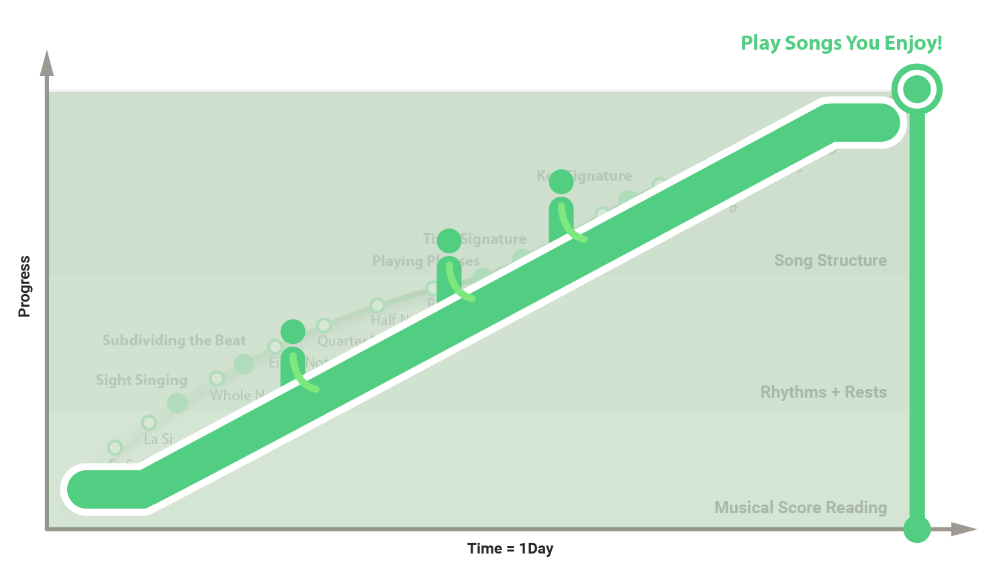

Instant Musician
iOS AR Piano App
Jun.2018 - Current

Jun.2018 - Current
Instant Musician is an iOS app that guides people through playing music on the piano. It leverages ARKit, and is a sister product to our award-winning HoloLens app, Music Everywhere. This product is the second AR music app from my startup Music Everywhere, Inc which consists of one programmer, one musician and one designer - me.
Learning how to play an instrument is really hard. You have to stay committed to learning this instrument for a long time before you can start playing the songs you enjoy.

Using Augmented Reality with mobile phones, we let people bypass this tough music learning curve, and skip to fun part - playing songs!

We want to inspire players who feel left behind by traditional music education. Our AR solution gives users a flexible option to enjoy playing again, with innovative technology
that opens the door to musical discovery. We want beginners and experienced players alike to feel the joy of music.
Below is an example of a persona that reflects this customer.
In Instant Musician, users can play songs they like from the Songbook with the AR guidance system easily.
-- Why is Portrait orient?
Although landscape is an ideal layout because of its wider FOV of the piano keys,
I discovered that during early testing that landscape mode left users feeling queasy.
d might cause people sick. d is bigger in landscape mode
Let's say the horizontal distance between right hand position on the screen and real life is "d".
I found that "d" might cause users sick, and d is bigger in landscape mode.
In portrait mode, users tend to move the phone closer to the right hand to see it on the screen.
However, in landscape mode(camera on the right side), the right hand can be seen one the screen even the phone
is in the distance.
-- What is the one dollar bill for?
To ensure stable alignment, image tracking markers are used in many AR experiences. From developing the HoloLens experience, I knew I wanted to avoid a custom marker (more friction for the user) and focus on something the user already had. Using a $1.00 bill allowed us to use a marker that was readily available for most users.

Left: Custom marker - More friction for users
Right: A $1.00 bill marker - Available for users
Register the AR piano interface with a $1.00 bill
-- AR 3D keyboard interface

-- AR 3D music notation

The app’s core function is guiding users to play songs with AR musical notations. To achieve that, we needed to consider how people interact with a song’s background music.
In play mode, users can adjust the background music like its speed and accompaniment styles. For active users, we design the practice mode for them to rehearse the song, one musical phrase at a time.
-- Big AR camera screen
The most important AR design principle is making the AR camera feed as big as possible on the screen. A well-arranged UI layout is critical to achieve this goal.
-- Left hand friendly
Users will hold the phone with their left hand, and play songs with right hand. So, all the on-screen interactions are better to be “left hand friendly” to allow users to select options in an efficient way.
Iterations
Based on the "Big AR camera screen" and "Left hand friendly" layout principles, I started with a basic layout plan. Then I tried to make the BGM/Speed settings and Play/Practice switch button visible on the sreen.
After I realized I didn't think about big phone users like iPhone 8 and above, I adjusted my layout plan to lower the Songbook button. However, in this way I couln't show other settings at same time, I developed the drawer system to organize them.
Final UI
I designed the UI drawer system to store UI elements, like switching between play / practice mode, changing speed, etc.

UI drawer Interaction

Drawer closes
Drawer opens
Play Mode UI
Practice Mode UI
The visibility of the musical notes is critical to the experience. What happens if it’s out of frame on the phone screen? How do users know where to look on the keyboard first?
1. An interactive compass will help users to find the start point after they pick a song. Instead of playing immediately, in this way, they have more time to get prepared.

Interactive start point finder

Compass finder
Start point
2. A white boundary on the sides of the screen will appear when there are notes outside the screen’s view to guide users to move the phone in that direction to see them.

Find the notes outside the view

Left boundary
Right boundary
The in-app purchase (IAP) model determines the songbook design. We started with doing research about how
to monetize this app.
The licensing for an individual song can transfer or expire.
Therefore, we decided to make a genre package includes 5~8 free songs, and 15+ locked songs. Users can buy the complete
genre for all songs. In this way, we can replace expired songs to mitigate the sense of losing purchase.
Users can buy the complete genre for all songs. We can replace expired songs with new songs.

Songbook Interaction

IAP: Before purchase all Jazz Songs
IAP: After purchase all Jazz Songs
iOS AR is still new to the majority. Therefore, the onboarding session plays an important role to give users an overview of how the AR technology work in this app at beginning.
I combined the welcome messages and the AR setting overview to create an appealing and functional onboarding session.

Like our HoloLens product, we needed to teach users where to put the image tracking marker (a dollar bill in this case) to spawn the AR interface, and adjust its alignment as well.
We needed to have a tutorial to guide users through the important UI functions.
I illustrated a sequence of graphics to cover core functions.


Below are the visual materials I created that represented our app’s design and experience.

A usability testing was conducted with a beta version of Instant Musician using Apple’s TestFlight. The test was designed to assess the success of the AR play function; its efficiency and usability when performing the designed tasks flows; The overall test findings identify errors and gain user’s feedback.
Future Design Improvements
Play tutorial session
A good tutorial experience will guide users to learn by doing instead of providing still images. To do so, we can design a simple song with tutorial contents for users to learn interface functions while playing.
Access to the songbook
The songbook should be always accessible. No AR interface registration required.
Creating a consumer-focused AR piano playing experience that utilizes both hands at once is the ultimate goal. Our eyes are on Apple’s coming consumer-ready AR glasses (2021), and adapt Instant Musician to this exciting new platform, converting iOS users from our current app.
AR piano learning road map

{kind=link}